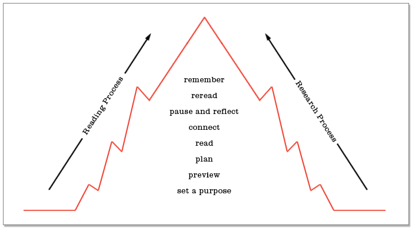

Every step of the Three-Step Reading Process—set apurpose, preview, plan, and so on—has a similar step in the research process. Think of this process as the two sides of a mountain.

Here are some ideas of how to use the reading process when youresearch.
BEFORE READING
Set a Purpose
Always begin by thinking about the purpose of your research. Whyare you there, at the library or in front of the computer screen? Whatare you looking for? Be as clear and specific in your purpose as youcan:
I need to find information about . . .
Preview
Before you begin your search, get a sense of what materials areavailable to you and which you’ll want to use first. What kinds ofsources will you look for? Will you start out at the library or beginwith an Internet search? Gather your materials and then make a plan.
Plan
Choose a reading strategy that can help you meet your researchpurpose. Use different strategies depending on what you’re readingand what you’re looking for. If the topic is complex, plan on usingtwo or more of the following strategies.
- Close reading. Read word for word, sentence by sentence, or line by line. Use close reading for a short work or an important paragraph or section of a longer work. Assume that every word carries meaning and contributes to the mood, tone, or message. Take close reading notes to collect your thoughts.
- Outlining. Organize the most important topics and details in your reading into an outline. Use words or phrases to describe vital information (topic outline) or complete sentences to list major points and supporting details (sentence outline).
- Reading critically. Find and evaluate a writer’s main idea. Reading critically involves examining the evidence and the writer’s motivation. Take critical reading notes to help collect your thoughts.
- Summarizing. Tell the main events or ideas as briefly as possible using your own words. Using summary notes can help you remember main points.
- Note taking. Taking key word/topic notes is a way of remembering key events and details. It also makes it easy to review for a test.
- Paraphrasing. Use your own words to describe what you’ve seen, heard, or read. Use paraphrase notes to help think through the process.
- Skimming. Glance quickly through a selection. Get a sense of the major topics, vocabulary, and ideas. You can also skim for details or for a quick review of material before a test.
- Synthesizing. Consider all the different parts of a text and combine them to come up with an understanding and evaluation of the whole work. Use a fiction organizer or main idea organizer to help organize your notes.
- Looking for cause and effect. Concentrate on the process by which one event brings about another. The event or events that happen first are the causes. The event or events that happen as a result are the effects. Use a cause-effect organizer to help you take notes.
- Questioning the author. As you read, ask questions about why an author made particular choices.
- Visualizing and thinking aloud. Make a mental picture or sketch of the words you read. Talk through your ideas about what you’re reading or drawing.
DURING READING
Read with a Purpose
Some researchers end up buried in an avalanche of sources. You canavoid this problem by reminding yourself of your purpose again andagain as you research. Write your purpose on an index card and keepyour research questions in front of you as you move from source to source.
Connect
Keep your interest alive as you research. Relate what you’re reading toyour own life and to your previous knowledge. If possible, choosematerials that you enjoy working with. If you come to a book, article, or website that doesn’t spark your interest, choose another. There’s plenty of information out there.
AFTER READING
Pause and Reflect
When you’ve completed your research, take a moment to reflect onthe information you’ve found. Ask yourself, “Do I know enough now to write a good report or give a knowledgeable talk about the topic?” If your answer is no, go back to the stacks or to a computer for moreresearch.
Reread
Rereading is an important part of researching. You’ll reread when youdouble-check facts, evaluate sources, and prepare to present whatyou’ve learned. Use one of the reading strategies to help you reread.